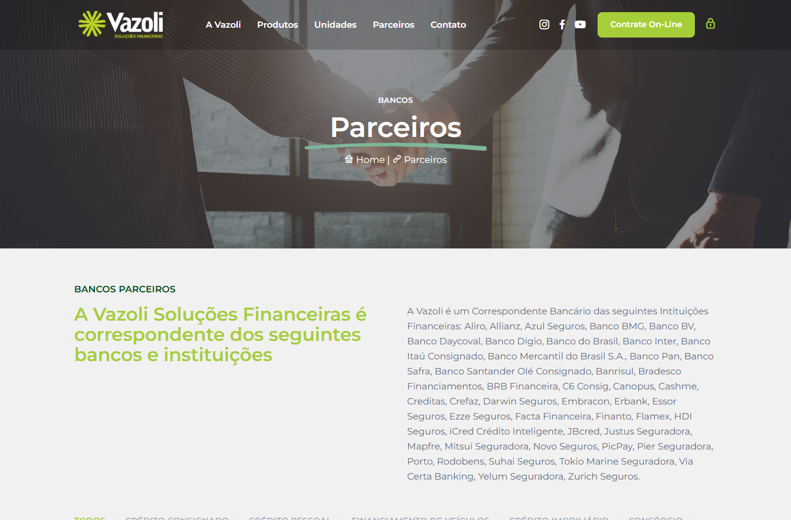
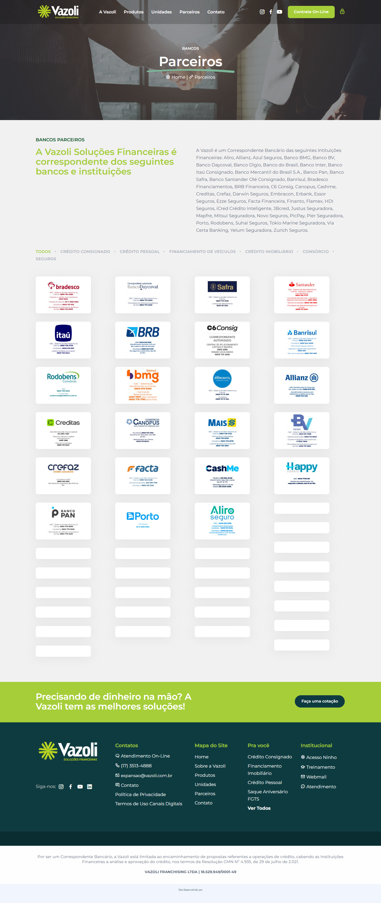

Sistema de Investigação de Marca e Identidade Online
https://vazoli.com.br/parceiros
Prioridade: MEDIUM · Cenário: B_AMBIGUOUS_COMMUNICATION · Revisão humana: PENDING
Trata-se da página de 'Parceiros' da franquia e correspondente bancário Vazoli Soluções Financeiras (CNPJ 18.529.949/0001-49). O estabelecimento apresenta alta transparência quanto à sua identidade empresarial, contexto multibancos, aviso explícito da Resolução CMN nº 4.935/2021 e divulgação de SAC/Ouvidoria das instituições. Contudo, como exibe o logotipo gráfico do 'banco BV' em sua galeria de parceiros, classifica-se como B_AMBIGUOUS_COMMUNICATION (REVIEW_REQUIRED / MEDIUM) para verificação de conformidade quanto ao uso de logotipo da instituição contratante (art. 14, II, da Resolução CMN nº 4.935/2021). [Revisor: CONFIRM] A página pertence a um correspondente bancário / promotora de crédito (Vazoli Soluções Financeiras - CNPJ 18.529.949/0001-49) que atua em múltiplos produtos, incluindo Financiamento de Veículos e Crédito Pessoal. Embora a empresa identifique claramente sua condição de Correspondente Bancário nos termos da Resolução CMN nº 4.935/2021, sua razão social, CNPJ e informe os números de SAC e Ouvidoria do Banco BV no card exibido em E-SHOT-FULL, há utilização do logotipo gráfico da instituição contratante e necessidade de verificar se o CNPJ consta na base de correspondentes autorizados do Banco BV. Portanto, confirma-se a classificação REVIEW_REQUIRED com prioridade MEDIUM.


| Ref | Tipo | Local | Conteúdo |
|---|---|---|---|
| E-URL | domain | url | URL final: https://vazoli.com.br/parceiros (domínio: vazoli.com.br) |
| E-COLLECT | network | collection | Status da coleta: OK; HTTP 200; ocorrências: network did not become idle (continuing) |
| E-DISC-001 | text | search_index | Índice de busca (grounding): vazoli.com.br — Contudo, a ampliação da varredura para vídeos públicos de redes sociais, revendas de veículos, corretoras e correspondentes bancários permitiu identificar estabelecimentos e canais que promovem o **"Feirão BV"** ou ofertam **financiamento de veículos sob a marca do Banco BV / BV Financeira** | **Estabelecimento / Perfil:** Vazoli Franchising / Soluções Financeiras | **URL:** `https://www.vazoli.com.br/parceiros` | **Como utiliza a marca:** Exibe a marca e o logotipo do **Banco BV** em destaque em sua vitrine digital de parceiros para captação de clientes de **Financiamento de Veículos**, Crédito Pessoal e Consignado, com chamadas para cotação/simulação própria (*"Faça uma cotação"*) | Por ser um Correspondente Bancário, a Vazoli está limitada ao encaminhamento de propostas referentes a operações de crédito"*) |
| E-SHOT-VIEWPORT | screenshot | viewport | evidence\C8037dfd392\attempt-1\viewport.png (sha256 22be1d5db8fc7578…) |
| E-SHOT-FULL | screenshot | page | evidence\C8037dfd392\attempt-1\fullpage.png (sha256 05d7dcc72ddd4e6b…) |
| E-TITLE | title | head | Parceiros | Vazoli Soluções Financeiras |
| E-META-1 | meta | head | description: Conheça todos os nossos bancos parceiros. Conheça! |
| E-HEAD-1 | heading | page | Parceiros |
| E-HEAD-2 | heading | page | BANCOS PARCEIROS |
| E-HEAD-3 | heading | page | A Vazoli Soluções Financeiras é correspondente dos seguintes bancos e instituições |
| E-FOLD | text | viewport (acima da dobra) | A Vazoli Produtos Unidades Parceiros Contato Contrate On-Line Bancos Parceiros Home | Parceiros Bancos Parceiros A Vazoli Soluções Financeiras é correspondente dos seguintes bancos e instituições A Vazoli é um Correspondente Bancário das seguintes Intituições Financeiras: Aliro, Allianz, Azul Seguros, Banco BMG, Banco BV, Banco Daycoval, Banco Digio, Banco do Brasil, Banco Inter, Banco Itaú Consignado, Banco Mercantil do Brasil S.A., Banco Pan, Banco Safra, Banco Santander Olé Consignado, Banrisul, Bradesco Financiamentos, BRB Financeira, C6 Consig, Canopus, Cashme, Creditas, Crefaz, Darwin Seguros, Embracon, Erbank, Essor Seguros, Ezze Seguros, Facta Financeira, Finanto, Flamex, HDI Seguros, iCred Crédito Inteligente, JBcred, Justus Seguradora, Mapfre, Mitsui Seguradora, Novo Seguros, PicPay, Pier Seguradora, Porto, Rodobens, Suhai Seguros, Tokio Marine Seguradora, Via Certa Banking, Yelum Seguradora, Zurich Seguros. Todos Crédito Consignado Crédito Pessoal Financiamento de Veículos Crédito Imobiliário Consórcio |
| E-FTR | text | footer | Precisando de dinheiro na mão? A Vazoli tem as melhores soluções! Faça uma cotação Siga-nos: Contatos Atendimento On-Line (17) 3513-4888 expansao@vazoli.com.br Contato Política de Privacidade Termos de Uso Canais Digitais Mapa do Site Home Sobre a Vazoli Produtos Unidades Parceiros Contato Pra você Crédito Consignado Financiamento Imobiliário Crédito Pessoal Saque Aniversário FGTS Ver Todos Institucional Acesso Ninho Treinamento Webmail Atendimento |
| E-NAV | nav | header | <https://vazoli.com.br/> | A Vazoli <https://vazoli.com.br/empresa> | Produtos <https://vazoli.com.br/produtos> | Unidades <https://vazoli.com.br/unidades> | Parceiros <https://vazoli.com.br/parceiros> | Contato <https://vazoli.com.br/contato> | Instagram <https://www.instagram.com/vazolioficial/> | Facebook <https://www.facebook.com/vazolioficial/> | Youtube <https://www.youtube.com/channel/UCU-RAs970rSmkkEzFcZY3TA/featured> | Contrate On-Line <https://vazoli.com.br/unidades> | Área do Franqueado <https://vazoli.com.br/#> | <https://vazoli.com.br/> | A Vazoli <https://vazoli.com.br/empresa> | Produtos <https://vazoli.com.br/produtos> | Unidades <https://vazoli.com.br/unidades> | Parceiros <https://vazoli.com.br/parceiros> | Contato <https://vazoli.com.br/contato> | Instagram <https://www.instagram.com/vazolioficial/> | Facebook <https://www.facebook.com/vazolioficial/> | Youtube <https://www.youtube.com/channel/UCU-RAs970rSmkkEzFcZY3TA/featured> | Contrate On-Line <https://vazoli.com.br/unidades> | Área do Franqueado <https://vazoli.com.br/#> |
| E-CTA-1 | cta | nav | Contrate On-Line <https://vazoli.com.br/unidades> |
| E-CTA-2 | cta | header | Contrate On-Line <https://vazoli.com.br/unidades> |
| E-CTA-3 | cta | footer | Faça uma cotação <https://vazoli.com.br/unidades> |
| E-CONTACT-1 | contact | nav | Instagram <https://www.instagram.com/vazolioficial/> |
| E-CONTACT-2 | contact | nav | Facebook <https://www.facebook.com/vazolioficial/> |
| E-CONTACT-3 | contact | nav | Instagram <https://www.instagram.com/vazolioficial/> |
| E-CONTACT-4 | contact | nav | Facebook <https://www.facebook.com/vazolioficial/> |
| E-CONTACT-5 | contact | header | Instagram <https://www.instagram.com/vazolioficial/> |
| E-CONTACT-6 | contact | header | Facebook <https://www.facebook.com/vazolioficial/> |
| E-CONTACT-7 | contact | header | Instagram <https://www.instagram.com/vazolioficial/> |
| E-CONTACT-8 | contact | header | Facebook <https://www.facebook.com/vazolioficial/> |
| E-CONTACT-9 | contact | footer | <https://www.instagram.com/vazolioficial/> |
| E-CONTACT-10 | contact | footer | <https://www.facebook.com/vazolioficial> |
| E-CONTACT-11 | contact | footer | (17) 3513-4888 <tel:1735134888> |
| E-CONTACT-12 | contact | footer | expansao@vazoli.com.br <mailto:expansao@vazoli.com.br> |
| E-IMG-1 | image | nav | imagem alt='Vazoli Soluções Financeiras' src=https://vazoli.com.br/logo/logo.png (160x48, abaixo da dobra) |
| E-IMG-2 | image | header (acima da dobra) | imagem alt='Vazoli Soluções Financeiras' src=https://vazoli.com.br/logo/logo3.png (160x48, acima da dobra) |
| E-IMG-3 | image | footer | imagem alt='Vazoli Empréstimos e Financiamentos' src=https://vazoli.com.br/logo/logo3.png (230x69, abaixo da dobra) |
| E-TXT-001 | text | page | Parceiros |
| E-TXT-002 | text | page | Parceiros |
| E-TXT-003 | text | page | BANCOS |
| E-TXT-004 | text | page | Parceiros |
| E-TXT-005 | text | page | Home | Parceiros |
| E-TXT-006 | text | page | BANCOS PARCEIROS |
| E-TXT-007 | text | page | A Vazoli Soluções Financeiras é correspondente dos seguintes bancos e instituições |
| E-TXT-008 | text | page | A Vazoli é um Correspondente Bancário das seguintes Intituições Financeiras: Aliro, Allianz, Azul Seguros, Banco BMG, Banco BV, Banco Daycoval, Banco Digio, Banco do Brasil, Banco Inter, Banco Itaú Consignado, Banco Mercantil do Brasil S.A., Banco Pan, Banco Safra, Banco Santander Olé Consignado, Banrisul, Bradesco Financiamentos, BRB Financeira, C6 Consig, Canopus, Cashme, Creditas, Crefaz, |
| E-TXT-009 | text | page | Atendimento On-Line |
| E-TXT-010 | text | page | Parceiros |
| E-TXT-011 | text | page | Atendimento |
| E-TXT-012 | text | page | Por ser um Correspondente Bancário, a Vazoli está limitada ao encaminhamento de propostas referentes a operações de crédito, cabendo as Instituições Financeiras a análise e aprovação do crédito, nos termos da Resolução CMN Nº 4.935, de 29 de julho de 2.021. |
| E-TXT-013 | text | page | VAZOLI FRANCHISING LTDA | 18.529.949/0001-49 |
| Dimensão | Sinal | Achado | Refs |
|---|---|---|---|
| VISUAL_IDENTITY | LEGITIMATE | O site utiliza identidade visual própria da Vazoli Soluções Financeiras (tons de verde e escuro), sem imitar o layout institucional do Banco BV. | E-SHOT-VIEWPORT E-SHOT-FULL E-IMG-2 |
| DECLARED_COMMERCIAL_IDENTITY | LEGITIMATE | A empresa identifica claramente sua razão social e CNPJ no rodapé ('VAZOLI FRANCHISING LTDA | 18.529.949/0001-49'), bem como seu nome comercial no topo e título. | E-TITLE E-TXT-013 E-SHOT-FULL |
| CORRESPONDENT_TRANSPARENCY | LEGITIMATE | A página declara expressamente na área visível inicial e no rodapé sua condição de Correspondente Bancário nos termos da Resolução CMN nº 4.935/2021, além de apresentar no card do Banco BV os telefones de SAC e Ouvidoria da instituição. | E-FOLD E-HEAD-3 E-TXT-008 E-TXT-012 E-SHOT-FULL |
| INSTITUTIONAL_LANGUAGE | LEGITIMATE | A linguagem é clara ao posicionar a Vazoli como correspondente de diversas instituições financeiras, sem se passar pelo próprio Banco BV. | E-HEAD-3 E-TXT-008 |
| LOGO_USAGE | CONFUSION | Apesar de listar diversos bancos concorrentes e exibir os canais de SAC/Ouvidoria, a página utiliza o logotipo gráfico 'banco BV' no card de parceiros. | E-SHOT-FULL E-DISC-001 |
| SERVICE_JOURNEY | NEUTRAL | A página é informativa sobre os bancos parceiros e possui botões de chamada para ação ('Contrate On-Line' / 'Faça uma cotação') direcionando para a página de unidades da própria Vazoli. | E-CTA-1 E-CTA-3 |
| CONTACT_CHANNELS | LEGITIMATE | Os canais de contato exibidos pertencem claramente à Vazoli (telefone, e-mail expansao@vazoli.com.br e redes sociais @vazolioficial), enquanto o card do BV informa os números de SAC (0800 701 8600) e Ouvidoria (0800 707 0083) do banco. | E-CONTACT-11 E-CONTACT-12 E-SHOT-FULL |
| CONSUMER_CONFUSION | NEUTRAL | O risco de o consumidor acreditar estar no site oficial do Banco BV é baixo devido à clara identificação da Vazoli e ao contexto multibancos, mas há uso do logotipo da instituição. | E-SHOT-VIEWPORT E-SHOT-FULL |
Trata-se da página de 'Parceiros' da franquia e correspondente bancário Vazoli Soluções Financeiras (CNPJ 18.529.949/0001-49). O estabelecimento apresenta alta transparência quanto à sua identidade empresarial, contexto multibancos, aviso explícito da Resolução CMN nº 4.935/2021 e divulgação de SAC/Ouvidoria das instituições. Contudo, como exibe o logotipo gráfico do 'banco BV' em sua galeria de parceiros, classifica-se como B_AMBIGUOUS_COMMUNICATION (REVIEW_REQUIRED / MEDIUM) para verificação de conformidade quanto ao uso de logotipo da instituição contratante (art. 14, II, da Resolução CMN nº 4.935/2021).
A página declara atuação como correspondente/prestador e identifica a empresa, mas não houve confirmação em cadastro autorizado.
| Tipo | Valor | Ref | Contexto |
|---|---|---|---|
| domain | vazoli.com.br | E-URL | |
| cnpj | 18.529.949/0001-49 | E-TXT-013 | VAZOLI FRANCHISING LTDA | 18.529.949/0001-49 |
| expansao@vazoli.com.br | E-FTR | ||
| social_profile | https://www.instagram.com/vazolioficial/ | E-NAV | |
| social_profile | https://www.facebook.com/vazolioficial/ | E-NAV | |
| social_profile | https://www.youtube.com/channel/UCU-RAs970rSmkkEzFcZY3TA/featured | E-NAV | |
| social_profile | https://www.facebook.com/vazolioficial | E-CONTACT-10 | |
| legal_name | VAZOLI FRANCHISING LTDA | E-TXT-013 | |
| phone | (17) 3513-4888 | E-FTR | |
| phone | 1735134888 | E-CONTACT-11 | |
| correspondent_declaration | Correspondente Bancário | E-FOLD | A Vazoli Produtos Unidades Parceiros Contato Contrate On-Line Bancos Parceiros Home | Parceiros Bancos Parceiros A Vazoli Soluções Financeiras é correspondente dos seguintes bancos e instituições A Va |
| correspondent_declaration | Resolução CMN Nº 4.935 | E-TXT-012 | Por ser um Correspondente Bancário, a Vazoli está limitada ao encaminhamento de propostas referentes a operações de crédito, cabendo as Instituições Financeiras a análise e aprovação do crédito, nos t |
| partnership_declaration | parceiros | E-DISC-001 | **Como utiliza a marca:** Exibe a marca e o logotipo do **Banco BV** em destaque em sua vitrine digital de parceiros para captação de clientes de **Financiamento de Veículos**, Crédito Pessoal e Consi |
| partnership_declaration | Bancos Parceiros | E-FOLD | Parceiros Bancos Parceiros A Vazoli Soluções Financeiras é correspondente dos seguintes bancos e instituições A Vazoli é um Correspondente Bancário das seguintes Intituições Financeiras: Aliro, Allian |
Mapeamento indicativo para apoio à auditoria. Não constitui conclusão regulatória; a decisão definitiva pertence à auditoria.
Fonte: NORMATIVE
Art. 14. O contrato de correspondente deve estabelecer: [...] II - vedação à utilização, pelo contratado, de logomarca ou de outros atributos que sejam similares aos adotados pela instituição contratante em suas agências, postos de atendimento, sítio eletrônico na internet, aplicativo ou outras plataformas de comunicação em rede;
Hipótese: Uso de logomarca ou de atributos similares aos adotados pela contratante em seus canais. Aplicável somente se confirmado o vínculo de correspondente.
Evidência observada: E-DISC-001 E-SHOT-FULL
Informação faltante:
Fonte: NORMATIVE
Art. 14. O contrato de correspondente deve estabelecer: [...] III - divulgação ao público, pelo contratado, de sua condição de prestador de serviços à instituição contratante, identificada pelo nome com que é conhecida no mercado, com descrição dos produtos e serviços oferecidos e canais de contato da instituição contratante, inclusive de sua ouvidoria, em local visível, em destaque e em formato legível, por meio de: a) sítio eletrônico do correspondente na internet, acessível na página inicial; b) aplicativo e outras plataformas de comunicação em rede do correspondente; [...]
Evidência observada: E-CONTACT-11 E-CONTACT-12 E-FOLD E-HEAD-3 E-SHOT-FULL E-TITLE E-TXT-008 E-TXT-012 E-TXT-013
Fonte: NORMATIVE
Art. 3º O correspondente atua por conta e sob as diretrizes da instituição contratante, que assume inteira responsabilidade pelo atendimento prestado aos clientes e usuários por meio do contratado.
Evidência observada: E-CONTACT-11 E-CONTACT-12 E-SHOT-FULL
Limitações: requisitos contratuais/internos não fornecidos: mapeamento limitado ao texto normativo
Decisão: CONFIRM → REVIEW_REQUIRED / MEDIUM
A página pertence a um correspondente bancário / promotora de crédito (Vazoli Soluções Financeiras - CNPJ 18.529.949/0001-49) que atua em múltiplos produtos, incluindo Financiamento de Veículos e Crédito Pessoal. Embora a empresa identifique claramente sua condição de Correspondente Bancário nos termos da Resolução CMN nº 4.935/2021, sua razão social, CNPJ e informe os números de SAC e Ouvidoria do Banco BV no card exibido em E-SHOT-FULL, há utilização do logotipo gráfico da instituição contratante e necessidade de verificar se o CNPJ consta na base de correspondentes autorizados do Banco BV. Portanto, confirma-se a classificação REVIEW_REQUIRED com prioridade MEDIUM.
| Tema | Severidade | Questionamento | Refs |
|---|---|---|---|
| Uso de logotipo da instituição financeira por Correspondente Bancário | LOW | Apesar de apresentar alta transparência regulatória (declaração de correspondente bancário conforme Resolução CMN nº 4.935/2021, razão social, CNPJ e telefones de SAC/Ouvidoria no card do Banco BV), o site exibe o logotipo gráfico do Banco BV na vitrine de parceiros, o que justifica a manutenção de REVIEW_REQUIRED para validação de vínculo contratual e avaliação de conformidade com o art. 14, II, da Resolução CMN nº 4.935/2021. | E-SHOT-FULL E-FOLD E-TXT-008 E-TXT-012 E-TXT-013 |
| contradictory_evidence | LOW | Coexistem declaração de correspondente e indícios de confusão. | E-FOLD E-TXT-008 E-TXT-012 |
| Fonte | Consulta / hipótese | URL original | Título / trecho |
|---|---|---|---|
| grounding | Objetivo: Páginas e vídeos no Facebook divulgando 'Feirão Banco BV' ou financiamento sob a marca.
Execute no Google Search as seguintes consultas (dorks):
- site:facebook.com ("Feirão Banco BV" OR "Feirão bv financeira" OR "Feirão BV") -inurl:/bancobv/ -inurl:/napistapp/ -inurl:/public/ -site:bv.com.br -site:bancobv.com.br -site:bvfinanceira.com.br -site:bvinvestimentos.com.br -site:napista.com.br -site:bvopen.com.br -site:meufinanciamentosolar.com.br -site:votorantim.com.br -site:vam.com.br
- site:facebook.com ("Banco BV" OR "bv financeira") (veículos OR financiamento) loja -inurl:/bancobv/ -inurl:/napistapp/ -inurl:/public/ -site:bv.com.br -site:bancobv.com.br -site:bvfinanceira.com.br -site:bvinvestimentos.com.br -site:napista.com.br -site:bvopen.com.br -site:meufinanciamentosolar.com.br -site:votorantim.com.br -site:vam.com.br
Liste de forma abrangente as páginas públicas encontradas (até 12 resultados distintos), informando para cada uma o nome do estabelecimento/perfil, a URL e como a marca é utilizada (destaque visual, título, feirão, simulador, redes sociais e se há ou não identificação clara de CNPJ e condição de correspondente bancário). H6-platform:Facebook | https://vazoli.com.br/parceiros | vazoli.com.br Contudo, a ampliação da varredura para vídeos públicos de redes sociais, revendas de veículos, corretoras e correspondentes bancários permitiu identificar estabelecimentos e canais que promovem o **"Feirão BV"** ou ofertam **financiamento de veículos sob a marca do Banco BV / BV Financeira** | **Estabelecimento / Perfil:** Vazoli Franchising / Soluções Financeiras | **URL:** `https://www.vazoli.com.br/parceiros` | **Como utiliza a marca:** Exibe a marca e o logotipo do **Banco BV** em destaque em sua vitrine digital de parceiros para captação de clientes de **Financiamento de Veículos**, Crédito Pessoal e Consignado, com chamadas para cotação/simulação própria (*"Faça uma cotação"*) | Por ser um Correspondente Bancário, a Vazoli está limitada ao encaminhamento de propostas referentes a operações de crédito"*) |
Original: https://vazoli.com.br/parceiros
Final: https://vazoli.com.br/parceiros
| Artefato | Caminho | SHA-256 | Bytes |
|---|---|---|---|
| screenshot_viewport | evidence\C8037dfd392\attempt-1\viewport.png | 22be1d5db8fc75789ca6c924299f624b0d5763349e855ccbee51858575f6c713 | 453256 |
| screenshot_full | evidence\C8037dfd392\attempt-1\fullpage.png | 05d7dcc72ddd4e6b592daf6606235c1f219dd79945e46ee65aa250d82b0f6912 | 1054464 |
| html | evidence\C8037dfd392\attempt-1\page.html.txt | daa01698886e3cd7de4eaf9a902de379c6dc9ee213d03ac571a2936bc5a83c27 | 64426 |
| text | evidence\C8037dfd392\attempt-1\text.txt | 5d102831ec19a0358a4888d35301e7103333d212590e3352cd81f22b3f195bc0 | 1949 |
| page_data | evidence\C8037dfd392\attempt-1\page.json | b8db85edeff2111879fb40ad57ac3c0b9efe3721812ae8cd87fc4a9e4fb022f6 | 19858 |
| Quando | De | Para | Nota |
|---|---|---|---|
| 2026-11-23T14:17:59+00:00 | DISCOVERED | QUEUED | prioritised (score 1.0) |
| 2026-11-23T14:59:30+00:00 | QUEUED | COLLECTING | |
| 2026-11-23T14:59:58+00:00 | COLLECTING | COLLECTED | |
| 2026-11-23T14:59:58+00:00 | COLLECTED | ANALYZING | |
| 2026-11-23T15:00:50+00:00 | ANALYZING | REVIEWING | |
| 2026-11-23T15:01:02+00:00 | REVIEWING | COMPLETED |